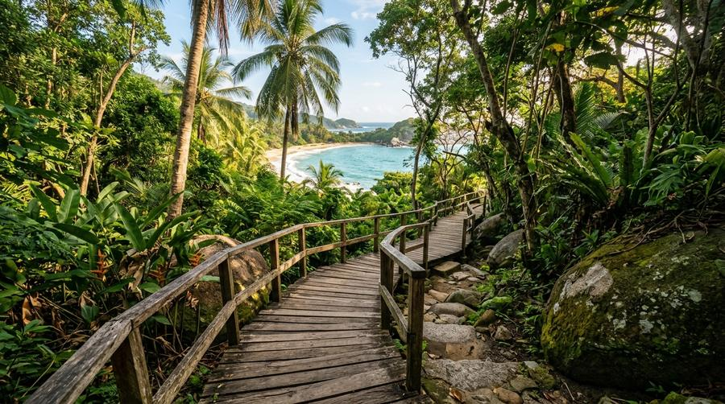

Guía operativa · Actualizado noviembre 2026
Cómo ir al Parque Tayrona desde Santa Marta: camping, cabañas y consejos reales
Por Camila Restrepo [DEMO] · Operación local en Santa Marta · Lectura de 4 minutos
Para visitar el Parque Nacional Natural Tayrona desde Santa Marta conviene salir temprano, llevar equipaje ligero y reservar alojamiento con anticipación si planeas pasar la noche. Con Tayrona Travel puedes hospedarte en camping o cabañas con y sin aire acondicionado desde $175.000 COP por noche coordinando directo por WhatsApp.

1. Camping, cabaña sin aire o cabaña con aire: cuál elegir
Dormir dentro del parque cambia por completo la visita: disfrutas la tarde cuando salen las excursiones de un día y bajas a la playa a las 7:00 AM con el agua calma. La elección depende de cómo quieras descansar después de caminar entre dos y tres horas bajo humedad caribeña:
- Camping (desde $175.000 COP/noche): ideal si viajas ligero, buscas presupuesto optimizado y disfrutas el plan de naturaleza abierta.
- Cabaña sin aire acondicionado: suma cama cómoda y privacidad en estructura fresca de madera y palma.
- Cabaña con aire acondicionado: la mejor opción en meses secos y calurosos o si viajas en pareja buscando descanso profundo por la noche.
2. Qué llevar en la mochila para caminar cómodo
Lleva una mochila mediana y deja las maletas grandes en tu hotel de Santa Marta. El sendero combina pasarelas de madera, piedras y tramos de arena:
- Calzado cerrado con buen agarre para el sendero y sandalias livianas para la playa.
- Bloqueador biodegradable, repelente de insectos, gorra y mínimo 1,5 litros de agua por persona.
- Documento de identidad original (indispensable para el registro de ingreso) y dinero en efectivo para gastos menores dentro del parque.
- Linterna pequeña para moverte por el campamento al caer la tarde.
3. Cómo combinar el Tayrona con Cartagena e Isla Barú
Muchos viajeros pasan tres o cuatro noches en Santa Marta y quieren sumar Cartagena e Isla Barú sin cambiar de hotel. Para ese caso operamos el Pasadía a Cartagena e Isla Barú por $185.000 COP por persona con salidas desde El Rodadero a las 3:00 AM y 7:00 AM.
A la salida pasamos a recogerte en la puerta de tu casa u hotel en Santa Marta. Al finalizar el día, el vehículo retorna a El Rodadero, punto desde donde el traslado final hacia tu alojamiento va por tu cuenta. Puedes ver la comparativa completa en nuestra página principal de planes.
4. Horarios de atención y reserva directa
Atendemos consultas y confirmaciones de lunes a viernes de 8:00 AM a 5:00 PM y sábados de 8:00 AM a 2:00 PM por WhatsApp al +57 300 000 0000. Escríbenos con tus fechas tentativas para verificar disponibilidad antes de desplazarte hacia la entrada del parque.